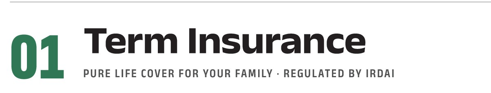
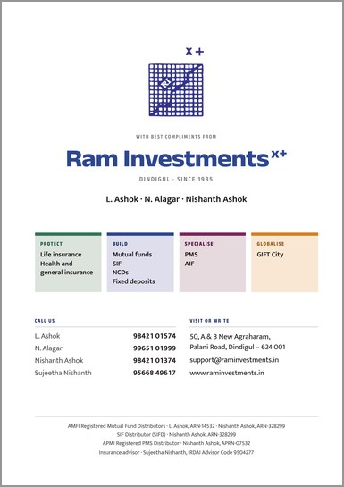
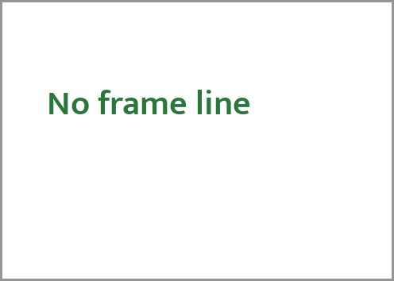
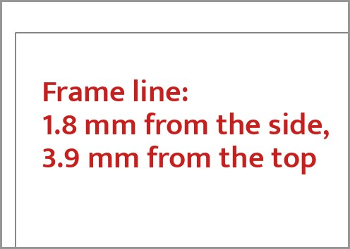

For the printer · 25 November 2026 · About your PDF “Ram Investment Final” (32 pages)
What to do
Replace our pages with the corrected file attached. In your PDF, some letters and numbers are broken (section 1). The corrected file fixes this, and the letters will stay intact when you open it in CorelDRAW. You can keep your notes page and your page placement as they are.
Remove the thin black frame line around every page (section 2), unless it is the standard border used on every page of the diary.
Send us a PDF proof before printing.
Corrected file: ram-investments-diary-2027-print-cmyk-curves.pdf (31 pages, A5, CMYK, all text as curves, no fonts needed). Your notes page makes 32.
1
Broken letters and numbers
Must fix
On most pages, the entry numbers (01, 02 …) and the small capital labels have pieces missing. In the example below, the “1” of “01” is cut through, and letters such as E, F, L and Y in “PURE LIFE COVER FOR YOUR FAMILY” have notches. Body text is not affected.
Our file, page 7 (enlarged)Your proof, page 7 (enlarged): the “1” is cut, letters have notches

Our file, page 7Your proof, page 7
Why it happened: the typeface draws many letters from overlapping pieces. When CorelDRAW opened our earlier file, it turned some of those overlaps into holes.
Please: use the corrected file attached. In it, every letter is a single solid shape, so this cannot happen again. Nothing else in the file has changed: it looks exactly the same as before.
2
Frame line around every page
Please remove
Your proof has a thin black line around all 32 pages, 1.8 mm from the side edges and 3.9 mm from the top and bottom. It is not part of our design. This close to the edge, small differences in cutting will make it look uneven.

Our file, page 1Your proof, page 1

Our corner

Your corner
Please: remove the frame line, unless it is the standard border printed on every page of the diary.
We also checked the wording, the page order and the colours in your proof: all are as we supplied. Thank you.